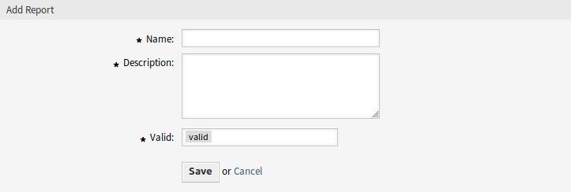

报告¶
使用此屏幕管理报告。 默认情况下，新的 OTRS 安装不包含任何报告。 报告管理屏幕位于 报告 菜单的 报告 菜单项中。

报告概览屏幕
管理报告¶
若要创建一个新报告：
- 点击左侧边栏的 添加报告 按钮。
- 填写必填字段。
- 点击 保存 按钮。
- 您将被重定向到 编辑报告 屏幕以编辑报告详细信息。

添加报告屏幕
若要编辑一个报告：
- 单击报告列表中的报告，或者您已从 添加报告 屏幕重定向到此处。
- 修改字段和报告详细信息。
- 点击 保存 或 保存并完成 按钮。

编辑报告详细信息屏幕
若要删除一个报告：
- 点击报告列表中的垃圾桶图标。
- 点击确认屏幕中的 确认 按钮。
若要立即运行一个报告：
- 点击报告列表中的 立即运行 链接。
- 在新屏幕中点击 立即运行 按钮。

查看报告屏幕
通用报告设置¶
添加或编辑此资源时，可以使用以下设置。 标有星号的字段是必填字段。
- 名称 *
- 此资源的名称。 可以在此字段中输入任何类型的字符，包括大写字母和空格。 名称将显示在概览表中。
- 描述
- 向此资源添加其它信息。 为了更清晰，建议始终将此字段填充为带有完整句子的资源描述，因为注释也将显示在概览表中。
- 有效性 *
- 设置此资源的有效性。 如果此字段设置为 有效，则每个资源即可仅在 OTRS 中使用。 将此字段设置为 无效 或 临时无效 将禁止此资源的使用。
自动生成设置¶
- 自动生成时间（cron）
以cron格式指定何时应自动生成报告。
参见
有关更多信息，请参阅 维基百科上的Cron文章。
注解
系统时区中的时间。
- 自动生成的语言
- 自动生成报告时使用的语言。
- 电子邮件主题
- 指定自动生成的电子邮件的主题。
- 电子邮件正文
- 指定自动生成的电子邮件的正文内容。
- 电子邮件收件人
- 指定自动生成的电子邮件的收件人地址（逗号分隔）。
输出设置¶
- 标题
- 此文本将用作报告的标题文本。
- 标题
- 报告的标题。
- 前言标题
- 报告中包含的前言的说明。
- 前言
- 报告的前言部分。
- 结尾标题
- 报告中包含的结尾的标题。
- 结尾
- 报告的结尾部分。